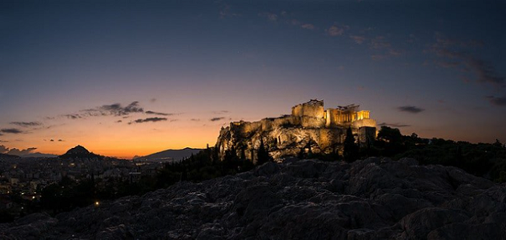
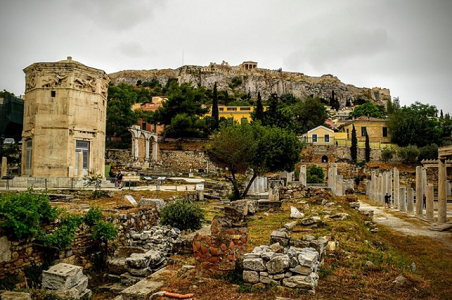
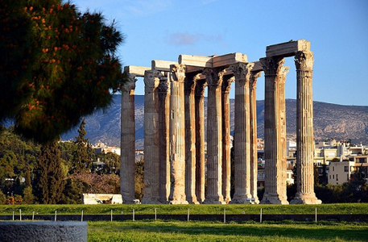
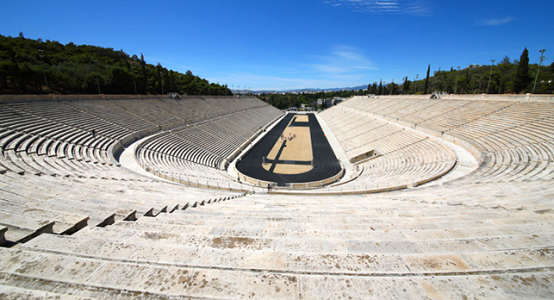

| Accueil | Nos voyages | Notre coup de coeur | Qui sommes nous? |
|---|
Du temple de Zeus (Olympiéion) aux magnifiques pins recouvrant les pentes de la colline des Muses, la capitale de la Grèce, Athènes, offre certaines des plus belles et des plus importantes attractions culturelles connues de l’Homme. Destination incontournable si vous comptez explorer la Grèce, il reste à savoir que visiter à Athènes lors de votre séjour. Pour vous aider dans l’organisation de celui-ci, nous avons dressé une liste des meilleures choses à faire à Athènes.
C’est l’une des sept merveilles du monde antique. La célèbre Acropole et le Parthénon d’Athènes, perchés sur une colline visible des quatre coins de la capitale, règnent en emblème de la ville. Lieu sacré hébergeant le plus grand nombre de vestiges à Athènes, l’Acropole replonge ses visiteurs dans l’Histoire de la Grèce antique. Une plongée dans le temps au coeur de la citadelle, entre les statues des caryatides et l’Erechthéion, jusqu’au non moins connu Parthénon, le temple dédié à la déesse Athéna.
Au premier siècle de notre ère, les Romains se déplacèrent de l’ancienne Agora (Agora d’Athènes) vers l’actuelle Agora Romaine. Plus petite que l’originale, la cour aux piliers de marbre était une place grandiose. Un dit « berceau de la démocratie » où se côtoyaient politique, finance et commerce. Haut lieu de la philosophie, l’ancienne Agora a notamment accueilli les grands Socrate et Platon qui y ont enseigné leurs pensées !
Majestueux, le Temple d’Olympiéion règne en lieu de culte suprême dans le sanctuaire antique d’Olympie. Ne vous laissez pas tromper par sa petite taille… Véritable hommage à Zeus, Dieu du ciel et de la foudre, il fait partie des trésors du pays à l’ADN immuable. Pour s’en rendre compte, il suffit de replonger au Vème siècle avant J.C. Si aujourd’hui, les 15 colonnes du Temple trônent en irréductibles, elles suffisent à imaginer les richesses qu’elles hébergeaient.
L'un des monuments les plus emblématiques des Jeux Olympiques se trouve à Athènes : le Stade panathénaïque est un stade antique, construit en 330 avant notre ère pour accueillir les grandes Panathénées, ancêtre de nos JO modernes.
